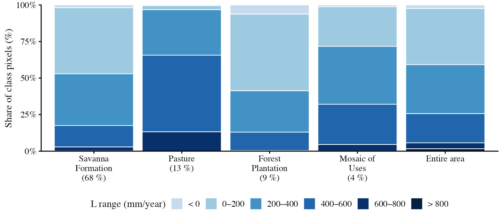
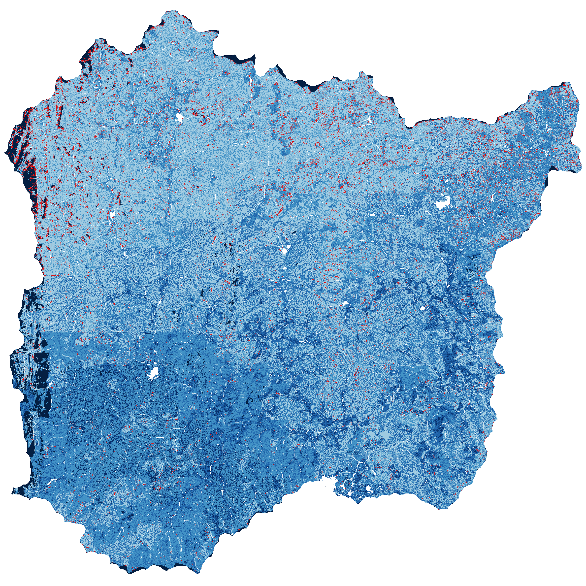
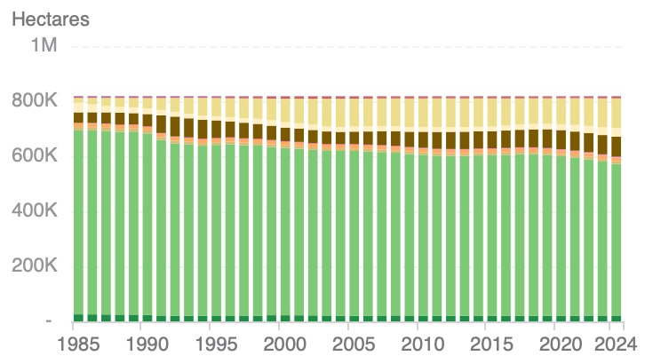
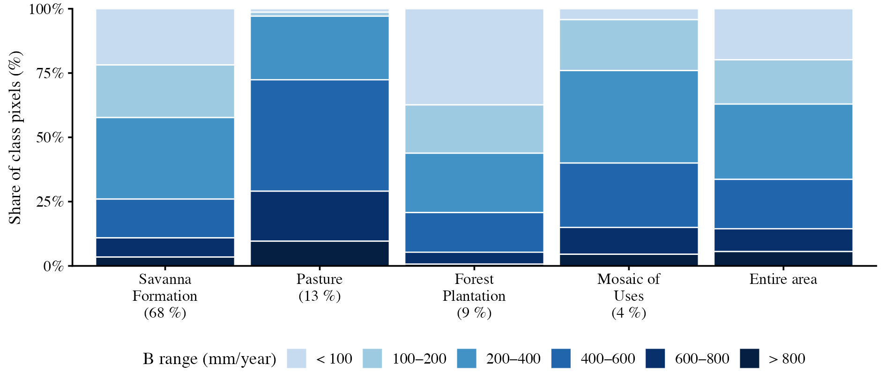
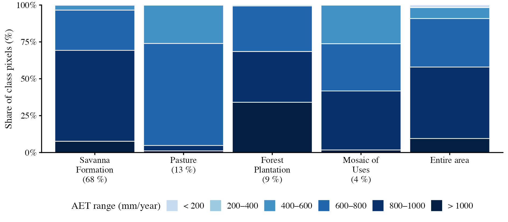

Land use and hydrological ecosystem services in the Rio Pardo watershed
A Seasonal Water Yield assessment for 2024 in northern Minas Gerais, Brazil. Master's thesis within the EcoSiPas project.
- Study area
- 8,177 km²
- Rainfall 2024 (long-term mean 804 mm)
- 1,092 mm
- Local recharge if plantations were savanna
- +110 mm/yr

Project overview
The Cerrado supplies much of Brazil's surface water, yet it is only weakly protected and is increasingly converted to eucalyptus plantations. This thesis models how land use and land cover relate to local recharge, baseflow and actual evapotranspiration in the Rio Pardo watershed.
- Institution: Hochschule Weihenstephan-Triesdorf, with the Forestry Department of the University of Brasília
- Context: hydrological component of the EcoSiPas project (Ecosystem Services in Silvopastoral Systems)
- Year modelled: 2024, a year with precipitation well above the long-term mean
Research question and objective
Where do land-use classes coincide with low or high modelled water availability? The thesis tests whether pixels under eucalyptus plantation differ systematically in local recharge from natural vegetation classes.
The objective is a transferable workflow that identifies hydrologically sensitive areas and supports land-use planning in Cerrado watersheds.
My contribution
- Prepared the climate inputs in Google Earth Engine: monthly CHIRPS precipitation, CGIAR reference evapotranspiration and a monthly rain-event table.
- Set up and ran the InVEST Seasonal Water Yield model, including a scenario run in which all forest plantation pixels are replaced by savanna formation.
- Developed the threshold-map and zonal-statistics analysis in QGIS and the evaluation and figures in R.
Methods and tools
The SWY model combines a curve number approach with a spatially explicit water balance and flow routing. Local recharge is the annual balance of precipitation, quickflow and actual evapotranspiration. Because the model was not calibrated, outputs are interpreted as relative spatial indices, not absolute streamflow.
Workflow
- Prepare inputsLand cover (MapBiomas, 30 m), soil hydrological groups (UFV), DEM (TOPODATA), monthly precipitation and evapotranspiration (GEE), biophysical table with Kc and curve numbers.
- Run the SWY modelD8 flow direction, flow accumulation threshold 2500, α = 1/12, β = 1, γ = 0.7. Parameters follow earlier studies in the same basin.
- Classify outputs in QGISThreshold rasters for local recharge, baseflow and actual evapotranspiration. Streams, urban areas and water bodies are masked out.
- Zonal statisticsPixel counts per land-use class and threshold raster.
- Evaluate in RCumulative counts become non-overlapping value ranges, expressed as the share of each land-use class and compared with the whole study area.
- Scenario runForest plantation replaced by savanna formation; difference raster of local recharge.
Threshold rasters were created with the QGIS raster calculator:
if("output@1" < THRESHOLD, 1, -9999)Scripts: Google Earth Engine, GIS calculations (R), figures (R).
Results
Forest plantation is overrepresented in the classes of low local recharge and low baseflow and in the classes of high actual evapotranspiration. Savanna formation, the dominant class, follows the catchment-wide distribution. Pasture shows the highest recharge and baseflow, which may partly reflect its lower evapotranspiration.
| Land use | Recharge 0–200 mm/yr | Baseflow < 100 mm/yr | AET > 1000 mm/yr |
|---|---|---|---|
| Savanna formation | 45 | 22 | 8 |
| Pasture | 3 | 1 | 1 |
| Forest plantation | 52 | 37 | 34 |
| Mosaic of uses | 27 | 4 | 2 |
| Entire study area | 38 | 20 | 10 |





In the scenario run, replacing all forest plantation pixels with savanna formation raised modelled local recharge by 110 ± 67 mm/yr on average (median 106 mm/yr).
Limitations: the model was not calibrated, only four stream gauges exist in the catchment, and the analysis covers a single, unusually wet year. The results show where plantations coincide with low modelled water availability, not absolute recharge.
Skills demonstrated
- Hydrological modelling
- Setup, parameterisation and scenario analysis with InVEST Seasonal Water Yield
- Raster analysis
- Threshold mapping, masking and zonal statistics in QGIS
- Remote sensing data
- Climate and land-cover data from Google Earth Engine and MapBiomas
- Data analysis in R
- Reproducible processing and figures with dplyr, tidyr, ggplot2 and terra
- Uncertainty and limits
- Interpreting uncalibrated model output as relative spatial indices
- Interdisciplinary work
- Contribution to an international research project in Brazil